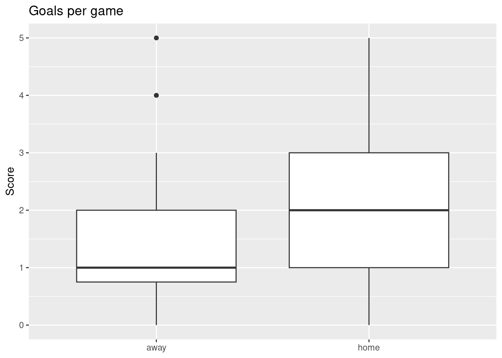

My dataset is all of Arsenal’s games between 2017 and 2022. Arsenal is one of my dad’s favorite soccer teams. Even though I don’t follow sports, this is a tribute to my dad and all the support he’s given me throughout my period of severe and almost incapacitating mental health struggles.
The variables of interest to me are Arsenal’s number of goals (ArsenalScore) and whether or not they played at home (HoAw). Specifically, my question is, will Arsenal’s number of goals (ArsenalScore) be lower when they are playing away from home (HoAw = Away)? Testing these variables is interesting, because it provides a framework for coaches and players to consider; namely, taking into account the familiarity of terrain when planning strategies for future games.
First, I gathered a table that github user bokushiSan gathered on Arsenal’s records from 2017-22.
To start, we’re going to read in the data and plot the relationships between HoAw and ArsenalScore.
library(tidyverse)
── Attaching core tidyverse packages ──────────────────────── tidyverse 2.0.0 ──
✔ dplyr 1.1.4 ✔ readr 2.1.6
✔ forcats 1.0.1 ✔ stringr 1.6.0
✔ ggplot2 4.0.1 ✔ tibble 3.3.1
✔ lubridate 1.9.5 ✔ tidyr 1.3.2
✔ purrr 1.2.1
── Conflicts ────────────────────────────────────────── tidyverse_conflicts() ──
✖ dplyr::filter() masks stats::filter()
✖ dplyr::lag() masks stats::lag()
ℹ Use the conflicted package (<http://conflicted.r-lib.org/>) to force all conflicts to become errors
arsenalscores <-read_csv("matches.csv")
Rows: 214 Columns: 12
── Column specification ────────────────────────────────────────────────────────
Delimiter: ","
chr (6): Season, Opponent, HoAw, Stadium, Coach, Referee
dbl (4): Tour, ArsenalScore, OpponentScore, Attendance
date (1): Date
time (1): Time
ℹ Use `spec()` to retrieve the full column specification for this data.
ℹ Specify the column types or set `show_col_types = FALSE` to quiet this message.
arsenalscores <- arsenalscores |>group_by(HoAw)ggplot(arsenalscores, aes(x = HoAw, y = ArsenalScore)) +geom_boxplot() +labs(title ="Goals per game",x =NULL, y ="Score")

From the plot, we can see that the mean number of goals scored at home is about 2, vs 1.5 at away. . The null hypothesis is that Arsenal will score the same mean number of goals at home, compared to when they are away. The alternate hypothesis is that the means of the scores at home will be greater than the means when they are away.
Let’s run the hypothesis test now, visualize it, and then find the p-value. Since we are measuring 2 variables, it is a permutation test.
From the plot, we see that the observed value (in red) is completely outside the distribution. It is far larger than any of the values within the distribution.
As you can see from the permutation test, the p-value is 0, which is consistent with the plot. This means that the probability of the null hypothesis being true is infinitesimally small. Thus, we can conclude that the mean score of Arsenal’s games on the home field is all but guaranteed to be greater than the mean score of its games on the away field.